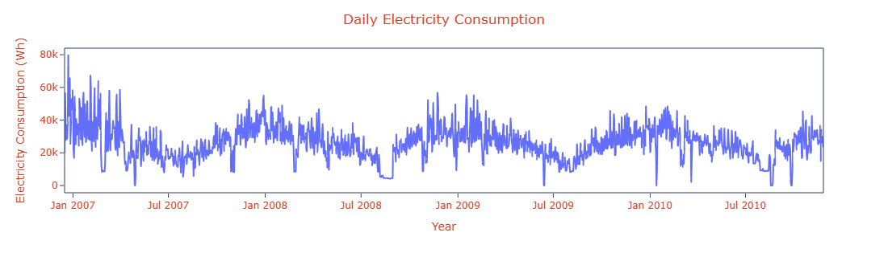

📑 Final Report: Energy Consumption Forecasting & Anomaly Detection
📌 Executive Summary
This project analyzed historical household energy consumption to identify trends, detect seasonality, forecast future usage, and flag anomalous days. Multiple models were compared, and an interactive Tableau dashboard was created for visualization and business insights.
📌 Project Overview
Understand consumption patterns, forecast future demand, detect anomalies, and assist operational planning through data-driven insights.
📌 Data Description
📌 Data Preprocessing
- Handled missing values by dropping them as only 1.25% missing values present
- Generated time features for modeling
- Calculated Daily Demand (kW) considering peaks of
Global_active_power
- Aggregated data to daily totals to get Daily Electricity Consumption (kWh)
📌 Exploratory Data Analysis (EDA)
Original Time series plot to explore trends and seasonality
Observed strong monthly and moderate yearly seasonality

Spotted Higher consumption in winter (Jan–Feb and Nov-Dec) Lower in summer (Jun–Aug)
Noticed Monthly cyclic pattern

Residuals post SARIMAX-modeling showed no patterns, indicating good seasonality capture
Rolling Stats of the series
📌 Visualizations
Daily demand & consumption time series
Decomposition Result: Level, Trend, Seasonality, Noise
Anomaly Detection graph
SARIMAX Forecast vs Actual Electricity Consumption
Prophet Forecast vs Actual Electricity Consumption
📌 Time Series Forecasting
SARIMAX
- Best model:
(8, 0, 0)(1, 0, 1, 30)
- Forecasted daily consumption for one year
Prophet
- Detected yearly and monthly seasonality automatically
- Faster and more accurate with minimal tuning
| Metric |
SARIMAX |
Prophet |
| MAE |
22.13 |
8.41 |
| MAPE |
61177632153903.7969 |
1835243223510714.2500 |
| MSE |
555.24 |
107.37 |
| RMSE |
23.56 |
10.36 |
Insight: Prophet consistently outperformed SARIMAX on all metrics.
📌 Anomaly Detection
- Used Z-Score method on residuals
- |Z| > 3 flagged as anomalies
- Example anomalous dates:
2006-12-232006-12-262007-02-03
📌 Key Insights
- Peak Usage Trends: Higher demand in winter, lower in summer
- Seasonal Dependencies: Yearly and monthly seasonality confirmed
- Abnormal Demand Days: Several flagged via anomaly detection
📌 Dashboard & Interactive Visualization
- Developed in Tableau
- Time series plots, model metrics, anomaly visuals
- Interactive parameter for toggling SARIMAX/Prophet forecasts
🔗 Tableau Dashboard Link
📌 Actionable Recommendations
- Adjust energy planning for high-demand months
- Investigate flagged anomalous days
- Adopt Prophet for operational forecasting
- Periodically review anomaly patterns for wastage/faults detection
📌 Conclusion
Forecasting and anomaly detection improve operational efficiency, energy-saving strategies, and capacity planning. Prophet proved ideal for this problem.
📌 Limitations & Future Scope
- Based on daily aggregates — future work could explore minute/hourly data
- External variables (weather, holidays) could improve models
- Try advanced anomaly detection (Isolation Forest, LSTM)